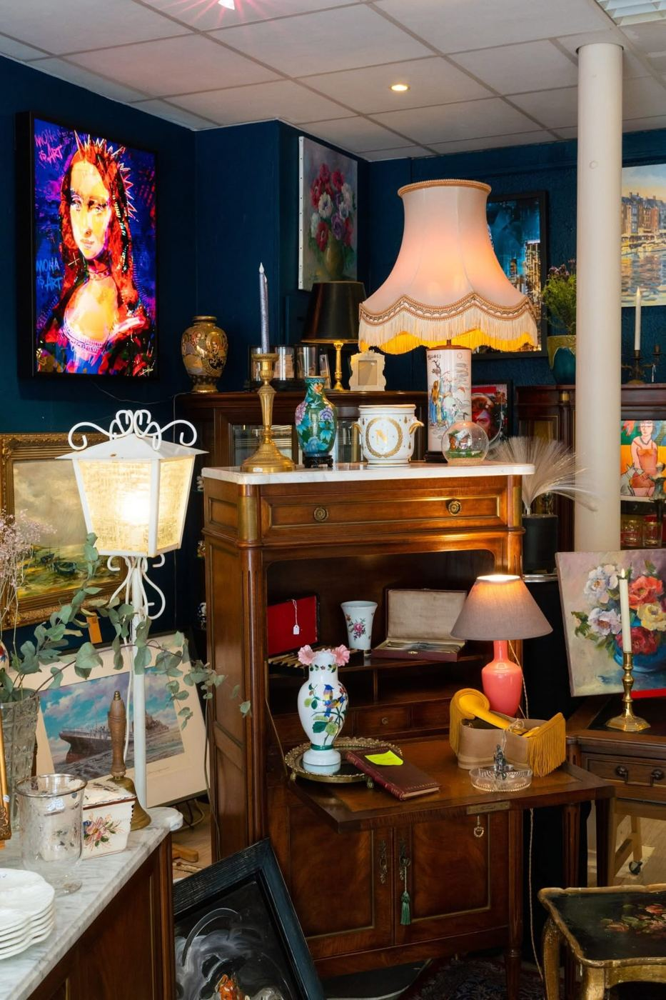

Débarras de maison et brocante à Rouen : on vide, on trie, on valorise
Débarras de maison, d'appartement, de cave et de local professionnel, rachat de meubles et d'objets anciens en Seine-Maritime, dans l'Eure, les Yvelines et le Val-d'Oise.
- 5,0/5 · note Google (3 avis)
- Devis après visite
- Objets de valeur repérés
- 567 communes desservies
- Débarras de maison, cave et grenierVisite, devis, tri puis évacuation
- Déblaiement de cave, grenier et garageÉvacuation complète après devis
- Entreprises et locaux professionnelsFin de bail, déménagement, cessation d'activité
- Brocante et rachat d'objets anciensEstimation chez vous ou sur photos
- 76, 27, 78 et 95Plus de 500 communes, depuis Rouen
Nos services
Débarras, brocante et rachat d'objets anciens
Alexandre Jourdain est brocanteur à Rouen. Il intervient en Seine-Maritime (76), dans l'Eure (27), dans les Yvelines (78) et dans le Val-d'Oise (95) pour le débarras de maisons, d'appartements, de caves et de greniers, y compris après un décès, et rachète les meubles et objets anciens.
Débarras de maison
Pièces à vivre, cave, grenier, garage et dépendances. Visite, devis, tri puis évacuation, avec mise de côté des objets de valeur.
Après décès et succession
Une intervention discrète, avec le temps de choisir les souvenirs à garder.
Appartement, cave et grenier
Accès, étages et escaliers pris en compte avant l'intervention.
Entreprise et local pro
Bureaux, commerces, ateliers et entrepôts : fin de bail, déménagement, cessation d'activité.
Brocante
Achat, tri et revente de meubles, vaisselle, bibelots, tableaux et objets de collection.
Rachat et estimation
Décrivez vos meubles et objets anciens, Alexandre vous donne son avis.
Déblaiement
Maison, cave, grenier, garage, jardin et local : évacuation complète après visite et devis.
Prix d'un débarras
Les critères qui font varier le devis et comment comparer.

La boutique
Une brocante au 30 rue aux Ours, à Rouen
Alexandre tient la brocante « Au Temps Suspendu » : meubles anciens, tableaux, vaisselle, bibelots, minéraux et objets de décoration. C'est de là qu'il part pour vos débarras et déblaiements, et c'est là que les objets repérés trouvent une seconde vie.





Comment nous travaillons
Votre débarras en 4 étapes
Du premier appel à la remise des clés, vous gardez le même interlocuteur : Alexandre.
- 01
Premier contact
Un appel au 06 15 40 32 79 ou le formulaire, avec l'adresse et une description du lieu.
- 02
Visite des lieux
Alexandre évalue le volume, les accès et repère les objets qui ont de la valeur.
- 03
Devis
Vous recevez un devis après la visite, puis la date est fixée avec vous.
- 04
Débarras
Vous gardez ce que vous voulez, le reste est trié et évacué.
Pourquoi nous faire confiance
Ce qui distingue Alexandre Jourdain
Un brocanteur, pas seulement un débarras
Il regarde chaque meuble et chaque objet avant de décider de ce qui part à l'évacuation.
Un devis après visite
Le prix tient compte du volume, des accès et du tri, il n'est pas annoncé au hasard.
Un interlocuteur unique
C'est Alexandre qui répond, visite et intervient, du premier appel à la fin du chantier.
Une entreprise de proximité
Installé au 30 rue aux Ours à Rouen, il se déplace dans quatre départements.
Avis Google
Contact, visite et devis rapides. Travail impeccable dans les délais promis, à l'écoute des demandes.Monique, avis Google, juillet 2026
Repères de prix
De quoi dépend le prix d'un débarras ?
Le prix ne se devine pas au téléphone : il dépend de ce qu'il y a réellement à sortir. Alexandre visite, puis remet un devis.
| Critère | Ce qui change le prix |
|---|---|
| Le volume | Une pièce, un appartement ou une maison entière avec cave et grenier |
| Les accès | Étage, ascenseur, largeur des escaliers, distance jusqu'au véhicule |
| Le tri | Quantité d'objets à trier, papiers et souvenirs à mettre de côté |
| L'évacuation | Nature et quantité de ce qui est évacué |
| Les objets de valeur | Meubles et objets anciens qui peuvent être rachetés |
Zone d'intervention
Le 76, le 27, le 78 et le 95 : 567 communes
Basé à Rouen, Alexandre se déplace en Seine-Maritime, dans l'Eure, les Yvelines et le Val-d'Oise. Chaque commune de plus de 1 000 habitants a sa page.
Secteurs principaux
- Sarcelles
- Sartrouville
- Saint-Germain-en-Laye
- Mantes-la-Jolie
- Garges-lès-Gonesse
- Poissy
- Franconville
- Conflans-Sainte-Honorine
- Bezons
- Trappes
- Les Mureaux
- Houilles
- Montigny-le-Bretonneux
- Pontoise
- Plaisir
- Herblay-sur-Seine
- Goussainville
- Le Chesnay-Rocquencourt
Votre commune n'apparaît pas ? Appelez-nous · Seine-Maritime (76) · Eure (27) · Yvelines (78) · Val-d'Oise (95) · Toutes les zones
Contact
Parlons de votre débarras
Un logement à vider, un local à libérer, des objets à faire estimer ? Expliquez-nous la situation, Alexandre vous répond.
- Téléphone
- 06 15 40 32 79
- Adresse
- 30 rue aux Ours, 76000 Rouen
Votre devis gratuit
Vos questions
Les réponses à vos questions
Qu'est-ce qu'un débarras de maison ?
C'est l'opération qui consiste à vider un logement de ses meubles, objets et encombrants, de la cave au grenier, puis à l'évacuer. Alexandre Jourdain visite, fait un devis, trie puis libère les lieux.
Que comprend un débarras ?
Les pièces à vivre, les chambres, la cave, le grenier, le garage et les dépendances. Le tri, la sortie des meubles et l'évacuation font partie de l'intervention.
Peut-on faire vider seulement une cave, un grenier ou un garage ?
Oui. Un débarras peut porter sur une seule pièce ou un seul espace.
Peut-on garder certains meubles ou objets ?
Oui. Vous indiquez ce que vous gardez avant l'intervention, ces objets sont mis de côté et ne sont pas évacués.
Faut-il trier avant la venue d'Alexandre ?
Non. Le tri fait partie du travail, vous n'avez pas à tout préparer. Il suffit de repérer ce que vous souhaitez conserver.
Combien de temps dure un débarras ?
Cela dépend de la taille du logement et de son encombrement. La visite permet d'annoncer une durée réaliste avant que vous ne vous engagiez.
Qui décide de vider le logement d'un défunt ?
En général, les héritiers, ensemble. Avant de vider, mieux vaut s'assurer de leur accord et, en cas de doute, demander conseil au notaire chargé de la succession.
Conseils
Nos conseils et actualités
Vider une maison de succession : les étapes dans le bon ordre
Accord des héritiers, souvenirs, objets de valeur : comment s'y prendre sans se précipiter.
Prix d'un débarras de maison : les critères et comment éviter les mauvaises surprises
Volume, accès, tri, évacuation : les critères qui font varier un devis de débarras.
Comment faire estimer un meuble ancien avant de le vendre ou de le jeter
Époque, état, signature : ce qui compte pour savoir si votre meuble a de la valeur.
Que faire de vos vieux meubles ? Les solutions, du don au rachat
Don, annonce, déchetterie, brocanteur : quelle solution pour quel meuble ?
Vider une cave ou un grenier : la méthode en 5 étapes
Cinq étapes pour venir à bout d'une cave ou d'un grenier encombré.
Brocanteur, antiquaire, chineur : quelles différences ?
Trois métiers proches, trois façons de travailler : à qui vendre quoi ?
Un logement à vider ou des objets à faire estimer ?
Dites-nous ce qu'il y a à faire : Alexandre passe voir et vous répond rapidement.